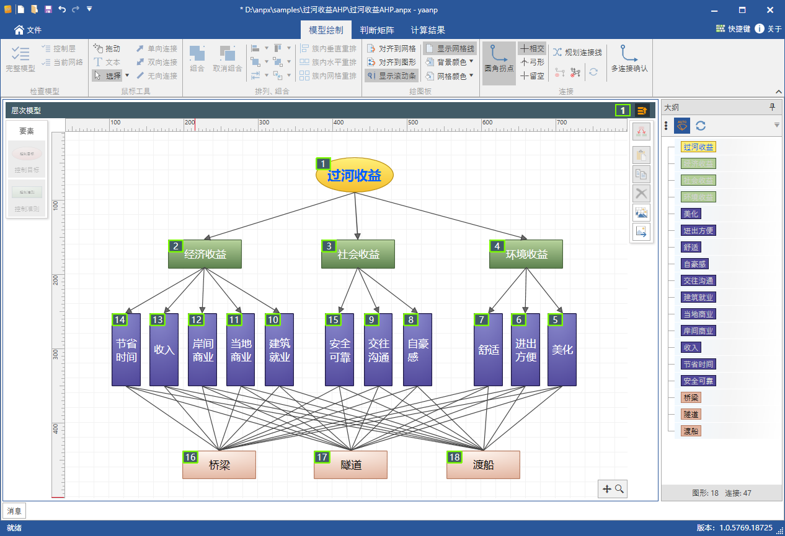

yaahp是一个层次分析法辅助软件，已经发展了十五年(2006年发布第一个版本)，由于开发所使用的底层技术老旧，很多问题很难解决，例如进一步提升绘图功能困难、无法明确设定要素顺序等。
yaanp是在多年的yaahp开发维护经验基础上，利用新的图形引擎开发的一款网络层次分析法辅助软件。不但解决了很多yaahp中由于技术原因无法解决的问题，还提供了网络分析法的支持。
yaanp V1.1提供除模糊综合评价法外的yaahp所有功能，这个功能的升级版模块将在yaanp后续版本中提供。
层次分析法(AHP)支持
yaanp和yaahp都提供了层次分析法支持。
层次分析法模型可以看做是一种特殊的网络模型：每一层对应一个簇，簇内节点对应层次中的每个要素，簇内节点之间没有相互影响，各层之间没有影响关系循环。
在yaanp中，除了直接构建层次模型(下图右上方绿框中)，还可以通过构建特殊的单网络模型对层次模型进行分析处理。
下图中三种过河收益决策的模型图，分别为层次分析法软件yaahp中构建的层次模型图(红框内)、yaanp中构建的层次模型图(绿框内)和yaanp中单网络ANP模型方式构建的层次模型图(黄框内)。图中下方黄框中的网络模型图与其他两个层次模型图完全等价，并且在计算参数设定相同的情况下，最终的计算结果完全相同的。

关于层次模型的不同构建方式的内容可以参考这篇文章：层次模型的不同构建方式
网络分析法(ANP)支持
网络分析法(Analytic Network Process，ANP)是一种适应非独立的递阶层次结构的决策方法，它是在层次分析法的基础上发展而形成的一种新的实用决策方法。AHP可以看做ANP的一个特例。
yaanp对使用网络分析法进行建模、计算和分析的全过程提供了支持；yaahp没有网络分析法支持功能。
相比于国外的Super Decisions软件，yaanp提供了更加友好的用户交互，以及更多的实用辅助功能，例如群决策等。yaanp与Super Decisions的功能对比可以参考这篇文章：yaanp & Super Decisions功能比较；yaanp与Super Decisions的计算结果比较可以参考这篇文章：yaanp & Super Decisions网络分析法计算结果比较。
打开yaahp存盘数据
yaanp V1.1添加了打开yaahp存盘数据文件(.ahpx)的功能，之前使用yaahp构建的模型、导入的判断矩阵数据都可以在yaanp中进行编辑、计算和分析。
图形化的模型构建
yaanp更换了图形引擎，提供了功能更强的图形编辑器。模型编辑更方便，可以直接编辑出漂亮的模型图，不需要使用其他专业的图形编辑软件。
要素顺序编辑模式
yaahp只能根据要素和连接创建时间确定要素顺序(影响两两比较问题先后顺序)，而yaanp中提供了专用的“顺序编辑模式”，可以方便地编辑要素的顺序。

多种判断矩阵数据输入方式
除了基本的判断矩阵形式的输入方式，yaanp还提供了问卷和直接输入形式，方便不同类型数据的输入。直接输入形式后续还会加入更多的自定义标准化方式。
下图展示了yaanp的三种判断矩阵数据输入方式：矩阵形式(红框)、问卷形式(绿框)和直接输入形式(黄框)。
群决策
yaahp和yaanp都支持群决策。但与yaahp不同，yaanp中所有决策都是群决策，单决策认为是只有一个专家的群决策。
问卷星问卷生成和导入
除了Excel格式的调查问卷，yaanp还可以生成问卷星问卷创建文本，方便地创建问卷星问卷。利用问卷星完成收集数据后，下载问卷答案导入yaanp就可以方便地进行分析、计算。
多种标度类型支持
除了标准的1-9标度，yaanp还提供了1-5、1-3和1-2标度的支持。Excel格式的问卷也支持这几种标度类型。
模糊综合评价法
新的模糊综合评价法模块正在开发，所以yaanp V1.0发布时没有使用yaahp所配套的模糊综合评价法模块。更强大的模糊综合评价法支持将会在yaanp后续版本中提供。